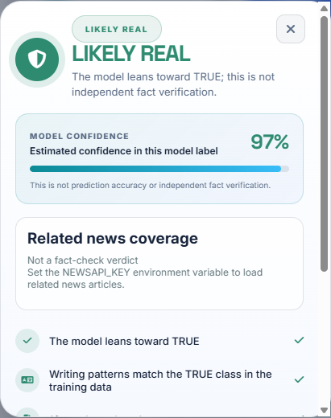
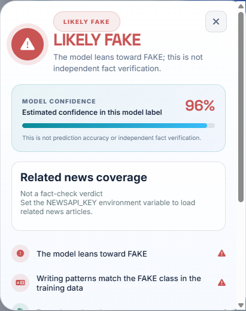
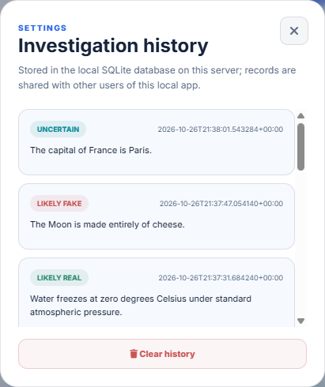
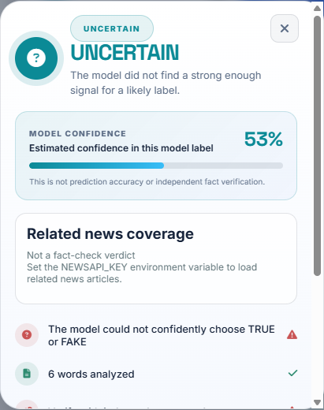

A web-based machine-learning application for analyzing news text and investigating claims
Submitted in partial fulfilment of the requirements for
Bachelor of Computer Applications
in
Mini Project
Academic session: 2026–27
This is to certify that the project report entitled “Fake News Detector” is a description of work carried out by Hera Fatima (Roll No. 26413037) and Aysha Khan (Roll No. 26413038) under the guidance of Mohammad Irshad, in partial fulfilment of the requirements for the Bachelor of Computer Applications Mini Project at the Department of Computer Applications, Ewing Christian College, during the academic session 2026–27.
The student and project details are personalized. This certificate becomes official only after review, approval, and signatures by the authorized college representatives.
We, Hera Fatima and Aysha Khan, declare that this report presents our Mini Project work and that sources, datasets, tools, and limitations are identified to the best of our knowledge. The model outputs documented here are system outputs and should not be represented as independent fact-check verdicts.
We would like to thank our project guide, Mohammad Irshad, for guidance and feedback during this project, and the Department of Computer Applications, Ewing Christian College, for the opportunity and resources to develop it. We also acknowledge the maintainers of the open-source software and machine-learning tools used in the implementation.
Fake News Detector is a local web application that analyzes user-submitted news text or a public article URL. A JavaScript frontend sends the request to a Flask API. The backend extracts readable article text where possible, transforms text using a TF–IDF vectorizer, and applies a trained linear support-vector classifier. It returns a likely-real, likely-fake, or uncertain model signal, plus a calibrated estimate of confidence in the predicted class. It can optionally request related coverage from NewsAPI and persists investigations in a local SQLite database.
The training pipeline uses a balanced 10,000-row sample from the project’s IFND data files, removes normalized duplicate statements, evaluates a stratified holdout, performs a separate publisher-held-out diagnostic, and fits a calibrated model for confidence estimates. The random 80/20 holdout achieved 94.8% accuracy. The publisher-held-out test achieved 95.8% accuracy but contained only 55 fake examples versus 1,585 true examples; fake-class precision was 44.3%, showing why overall accuracy alone can be misleading.
The application is a screening aid, not a fact-checking authority. Its confidence percentage is not an accuracy guarantee. Real account authentication is not implemented, history is shared by users of the local server, and live NewsAPI coverage requires a private API key.
Keywords: misinformation, text classification, TF–IDF, LinearSVC, Flask, SQLite, confidence calibration.
This report adapts the reference’s academic chapter structure to the project’s actual scope. It is not a reproduction of the reference report.
Online claims spread quickly, while readers often need to assess a story before they have time to compare sources. A machine-learning classifier can provide a quick text-pattern signal, but it cannot independently establish whether a factual statement is true.
The project addresses the need for an accessible way to submit a claim or article and receive a fast preliminary classification. A useful implementation also needs to handle ordinary network and input errors clearly, retain a local investigation history, and communicate the limitations of automated classification.
The system analyzes text patterns in English claims or the readable text extracted from a public HTML article page. It returns a model label, word count, confidence estimate, history identifier, and optional related coverage. It provides links for the user to search for sources but does not independently verify them.
Manual source comparison is valuable but takes time. Keyword rules can be brittle, and a classifier trained on previously labeled examples can learn publisher or writing-style correlations rather than verify a claim’s facts. Therefore, this project presents automated output as an initial signal and keeps source checking with the user.
The proposed application combines a responsive web interface, Flask API, TF–IDF text representation, linear SVM classifier, sigmoid-calibrated confidence model, optional NewsAPI integration, and SQLite investigation history. It can analyze raw text or extract readable content from a public page.
| ID | Requirement | Implementation |
|---|---|---|
| FR-01 | Accept non-empty news text or public article URL. | Browser form and POST /predict. |
| FR-02 | Return model label, uncertainty state, and confidence. | LinearSVC plus calibrated confidence artifact. |
| FR-03 | Show readable article metadata when URL extraction succeeds. | HTML parser and article-details panel. |
| FR-04 | Persist and display investigation history. | SQLite helpers in database.py. |
| FR-05 | Optionally retrieve related reporting. | NewsAPI, only when NEWSAPI_KEY is configured. |
| FR-06 | Handle invalid input and provider failures explicitly. | JSON errors and frontend notifications. |
Responsive layout, clear labels, light/dark theme, English/Hindi UI text, and understandable result states.
Bounded inputs, request-size handling, explicit errors, and focused regression tests.
Database operations separated from Flask routes; model training and dataset creation scripts kept distinct.
Public URL validation prevents local/private address fetches. The app has no user authentication or private per-user history.
The browser and Flask service are served from the same origin. This avoids separate development-server CORS configuration and keeps the model and database operations on the Python backend.
The training script uses a scikit-learn TF–IDF vectorizer with lowercase normalization, unigram and bigram features, minimum document frequency of two, and sublinear term frequency. The text is converted into a sparse feature vector that records how informative terms and adjacent term pairs are within the training corpus.
A LinearSVC model predicts class 1 (TRUE) or class 0 (FAKE). This is a supervised text-pattern classifier. Its class is not a verification of the claim’s underlying facts.
The API measures the absolute signed decision margin. If the margin is below ln(1.25) ≈ 0.223, the result is shown as UNCERTAIN. Otherwise, the predicted class is displayed as LIKELY REAL or LIKELY FAKE. The threshold is an application decision rule on the SVM margin, not a probability cutoff.
A separate sigmoid-calibrated LinearSVC, fitted with five-fold calibration during training, supplies a probability-like estimate for the predicted class. The UI labels this “Model confidence” and explicitly says it is not prediction accuracy. Calibration is learned from the available dataset; distribution shifts, publisher leakage, and out-of-domain inputs can still make an individual percentage misleading.
The separate database.py module creates and migrates an investigations table. Each record stores submitted text, predicted label, uncertain flag, word count, optional article metadata, related article JSON, and timestamp. The browser can read the latest records with GET /history and clear them with DELETE /history.
History is local to this server and shared; it is not partitioned by account. Browser-only sign-in/profile controls do not authenticate users or provide privacy.
| Layer | Technology | Role |
|---|---|---|
| Frontend | HTML, CSS, JavaScript | Dashboard, input, result cards, settings, history interactions. |
| Web/API | Flask | Same-origin page/static routes, prediction endpoint, history endpoints. |
| ML | scikit-learn, joblib, pandas | TF–IDF, LinearSVC, confidence calibration, training and artifact loading. |
| Storage | SQLite | Durable local investigation history and schema migration. |
| Optional service | NewsAPI | Up to five related articles when an environment key is configured. |
| Route | Purpose | Response / behavior |
|---|---|---|
| GET / | API status | JSON message confirming the service is running. |
| GET /app/ | Serve application | Returns the dashboard page from the same origin. |
| POST /predict | Analyze text/URL | Class, uncertain flag, confidence, word count, evidence status, history ID. |
| GET /history | Read investigations | Latest stored entries, newest first. |
| DELETE /history | Clear history | Deletes server-local history. |
The URL path accepts only standard public HTTP/HTTPS destinations, rejects credentials and nonstandard ports, validates DNS/IP addresses, and validates redirects. It reads a bounded amount of HTML and extracts text while excluding common non-content elements. Some publishers block automated access or provide too little readable text; such failures are reported rather than silently interpreted.
NewsAPI results are labeled related coverage, not fact-check verdicts. If no NEWSAPI_KEY is configured, the application reports that related coverage is unavailable; the classifier still runs.
The project contains the IFND source file IFND.csv and a balanced training sample IFND_10000.csv. The dataset-generation script normalizes Unicode, whitespace, and case; removes invalid/empty entries; excludes normalized statements with conflicting labels; removes same-label duplicates; and samples 5,000 TRUE and 5,000 FAKE entries using a fixed random seed.
The training script repeated normalization and duplicate checks on the sample. In the run documented here it loaded 10,000 rows, removed two same-label duplicate rows, and retained 9,998 clean entries: 4,998 FAKE and 5,000 TRUE.
A deterministic stratified random 80/20 split was used for the main evaluation. This produced 7,998 training rows and 2,000 test rows (1,000 per class). Preprocessing was fitted only on each training split before transforming its corresponding test data.
A separate publisher-held-out diagnostic used a grouped split by the dataset’s publisher field. Its test set contained 1,640 rows, but only 55 were fake and 1,585 were true. That split helps reveal publisher generalization issues but is not a balanced measure of deployed performance.
| Class | Precision | Recall | F1-score | Support |
|---|---|---|---|---|
| FAKE | 0.976 | 0.918 | 0.946 | 1,000 |
| TRUE | 0.923 | 0.977 | 0.949 | 1,000 |
| Macro average | 0.949 | 0.948 | 0.947 | 2,000 |
| Confusion matrix — actual rows, predicted columns | ||
|---|---|---|
| Predicted FAKE | Predicted TRUE | |
| Actual FAKE | 918 | 82 |
| Actual TRUE | 23 | 977 |
| Test population | Accuracy | FAKE precision | FAKE recall | Interpretation |
|---|---|---|---|---|
| 55 FAKE; 1,585 TRUE | 95.8% | 44.3% | 98.2% | Highly imbalanced; overall accuracy obscures poor fake precision. |
These are dataset-split metrics, not guarantees about individual live inputs. The confidence model was evaluated on the random holdout with Brier score 0.036; confidence should still be treated cautiously under distribution shift.
“Water freezes at zero degrees Celsius under standard atmospheric pressure.”

The output panel shows the predicted class, a confidence indicator, related-news provider status, text-pattern checks, and links for independent user research. In this capture the optional NewsAPI key was not configured, so the related-news section correctly says articles are unavailable.
“The Moon is made entirely of cheese.”


The history page displays saved labels and input text. The database is local to the server and shared; no per-user privacy boundary is implemented.
“The capital of France is Paris.”

| Value | What it describes | What it does not prove |
|---|---|---|
| Per-input confidence (e.g. 53%) | Calibrated score assigned to the predicted class for one input. | It does not prove that the class is factually correct. |
| Holdout accuracy (94.8%) | Share of examples correctly classified in one labeled 2,000-row test split. | It does not guarantee this accuracy on live claims or new publishers. |
| UNCERTAIN | SVM margin fell below the application's threshold. | It does not mean the underlying statement is inherently unknowable. |
The backend regression suite uses Flask’s test client and temporary SQLite storage. It was executed successfully after the confidence field was added.
| Test case | Expected behavior | Result |
|---|---|---|
| Prediction persistence and clear | Returns a history ID, saves one record, and clears history through the endpoint. | PASS |
| Empty prediction input | Rejects blank text with HTTP 400 and a clear error. | PASS |
| Legacy database migration | Adds the evidence JSON column to an older schema. | PASS |
| Missing NewsAPI key | Returns explicit provider-unavailable status without blocking prediction. | PASS |
| NewsAPI response limits/label | Limits results to five and identifies them as related reporting, not a verdict. | PASS |
| Private article URL | Rejects loopback/private destination. | PASS |
| Confidence response | Includes numeric confidence between 0 and 1. | PASS |
The project delivers an end-to-end local news-text screening workflow: browser input, Flask request handling, optional article extraction, TF–IDF classification, uncertainty signaling, calibrated model confidence, related-coverage status, SQLite-backed history, and source-search links. The interface and backend are connected from one origin, and the focused regression suite passes.
Evaluation is encouraging on a stratified random sample but substantially less convincing for publisher transfer and fake-class precision. The correct product interpretation is therefore “a model-generated signal to support further checking,” not “automatic truth detection.” The application’s confidence meter is explicitly distinct from its test-set accuracy.
Python with Flask, joblib, pandas, and scikit-learn installed according to requirements.txt. Trained files model.pkl, vectorizer.pkl, and confidence_model.pkl must be present in the Frontend folder.
py -m unittest discover -s tests -v
Set NEWSAPI_KEY in the same terminal before starting Flask. Keep the key private and do not commit it. The model continues to work without a key.
From the Frontend directory, run py train_model.py. This evaluates the cleaned sample, then writes the classifier, vectorizer, and calibrated confidence model. Review the printed evaluation results and limitations rather than relying on one aggregate metric.
| File | Purpose |
|---|---|
| app.py | Flask frontend routes, prediction workflow, URL handling, optional provider integration. |
| database.py | SQLite schema, migration, persistence, history retrieval and clearing. |
| train_model.py | Data cleaning, evaluation, classifier and calibrated-confidence training. |
| make_dataset.py | Normalized deduplication and balanced sample generation. |
| index.html / style.css / script.js | Dashboard structure, visual design, browser interactions and API calls. |
| tests/test_history_api.py | Focused API, database, provider, URL validation, and confidence regression coverage. |
End of report. Cover-page details and formal sign-off fields remain intentionally editable.